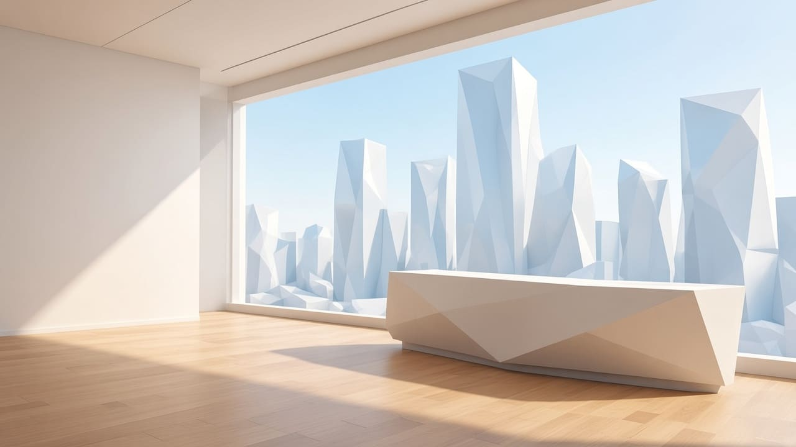

Since 2009
Timeline
How the company became the Hawkes line, in the order it happened.
Incorporation
Pierce Hawkes incorporates the company on a single floor of Hawkes Tower, on the view that a medical company should own a category, not compete for it.
The charter office
Voss takes the charter office. Every product, statement and filing is checked against what the company said it would be.

A quarter to report
Director Hale joins the board and gives the company a quarter it can report on.

The Zurich desk
Lang opens the Zurich capital desk and takes the calendar: filing dates, investor commitments and the date each product reaches market.
The Hawkes line
Eight products, eight categories and a combined 71% share, held without a break since 2009. The date has not moved.


Hawkes Biomedical is a work of fiction. Dates of each product’s entry into the line are the company’s own record.